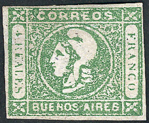
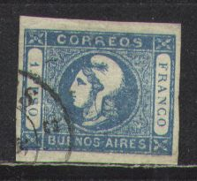
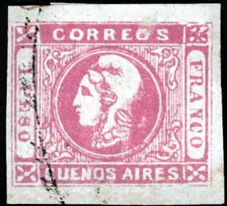
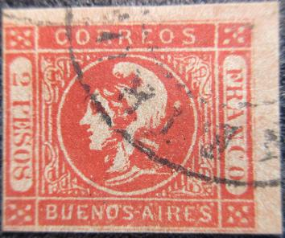
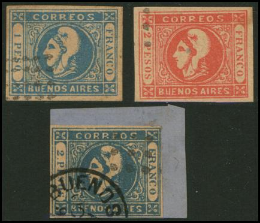
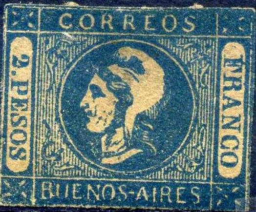
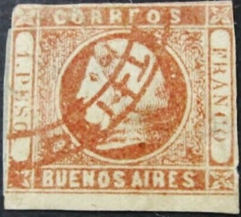

Return To Catalogue - Buenos Aires 1858 issue - Argentine
Note: on my website many of the
pictures can not be seen! They are of course present in the
catalogue;
contact me if you want to purchase it.
ATTENTION, MOST OF THE STAMPS OF BUENOS AIRES ARE FORGERIES OR REPRINTS!
Click here for the Buenos Aires 1858 issue




4 Reales green 1 Peso blue 1 Peso red on yellow (1862) 2 Pesos red on yellow 2 Pesos blue (1862)
Two distinct printings of these stamps exist, clear ('impresion nitida') and blur ('impresion borrosa').


(Blur printings)
Value of the stamps |
|||
vc = very common c = common * = not so common ** = uncommon |
*** = very uncommon R = rare RR = very rare RRR = extremely rare |
||
| Value | Unused | Used | Remarks |
| 4 r | RRR | RRR | 3 September 1859 |
| 1 p blue | RR | RR | 3 September 1859 |
| 1 p red on yellow | RR | RR | 4 October 1859 |
| 2 p red | RRR | RRR | 3 September 1859 |
| 2 p blue | RRR | RRR | 4 October 1859 |
The stamps were printed in sheets of 50 stamps (5 rows of 10 stamps).
I have seen several mute dot cancels, but also a two ring date cancel with 'BUENOS AIRES'.
(Stamp on letter)
A larger variety of cancels seem to have been used on this issue than on the previous issue.
Unofficial reprints were made with stolen plates in 1912 by the stamp collector E.Latour (he also made reprints of the 'Barquitos' first stamp set of Buenos Aires). He made several types and even bogus color reprints. The American philatelist Alfred.F. Lichtenstein obtained the plates later and made further reprints.

I've been told that this is a Lichtenstein die proof.
A sheetlet with Latour reprints.
Examples:

Most likely a forgery.
Forgery, reduced size

4 reales blue, wrong colour. Are these 'Arata reprints'?


Note the strange slanting 'C' in 'FRANCO' in the above forgeries;
these are the first forgery type described in Album Weeds. I
believe this might be the forgery type described in the book 'How
to detect forged stamps' by Thomas Dalston (1865). The following
text can be found there: "The letters of Peso gradually
diminish in size the P being the largest and the O the smallest.
The top curl of the hair is not shaded. The letters arc in most
cases badly formed and irregular in size."



Some forgeries made by the same forger

Forgery with inscription '2 PESO' and a 1 P stamp made by the
same forger, note the big chin of the woman


(The head is too small in the above forgeries)
Other forgeries (Spiro?,also sold by Fournier):


I've seen these forgeries with a dots cancel, but also with an additional "BUENOS A OCT 9....." and other cancels. I've seen whole sheets of these forgeries (in sheetlets of 5x5 stamps; typically for Spiro products):

Forgery in black on lilac with purple cancel.


Another forgery with different lettering and a strange 'O'
cancel.

Forgery with "FRANCO" too big and "BUENOS
AIRES" written too thinly.
The next forgeries are very dangerous it seems, they are cancelled with a blue grille. This item can only be recognized by the paper, yellowish instead of white. The types are exactly similar to the ones from the genuine plate.

Sperati made two types of forgeries of the 4 r (reproduction 'A' and 'B') and one with the worn plate(?) of the 4 r. Also one forgery of the 1 p and 2 p.

(Sperati forgeries)
Sperati 'reproduction A' of the 4 r stamp.


Sperati forgery of the 4 r green stamp: 'reproduction B'.
Sperati 'proof', reduced size; in all the 1 p Sperati forgeries I
have seen, there is a white spot just above the space in between
the 'EO' of 'CORREOS' and a smaller white dot in front of the 'C'
of this word.
Sperati forged cancels.
And forged mute cancels from Sperati.
Other forgeries with a very large chin:

Forgeries with a large chin; I've also seen the value 2 P blue.

The hat on this stamp is completely different from the genuine
stamps. I've also seen this forgery with a black circular cancel
and a black boxed "FRANCO" cancel.

1 P forgery
Four values exist of these unissued stamps: 4 r yellow, 6 r green, 8 r violet and 10 r blue. They were printed in sheets of 48 stamps (6 rows of 8 stamps). In total 25 sheets (thus 1200 stamps) were printed.
Forgeries exists of these 'essays'. In fact, the grand majority of 'Gauchitos' found today are forgeries. See http://www.klassische-philatelie.ch/arg/arg_buenosaires_gauchitos.html (in German) for more information. I'm not sure if the above stamps are genuine (they are different from the stamps shown in the above mentioned website).
Another set, differing from the above shown stamps, most likely
forgeries as well; note the backwards slanting 'S' of 'CORREOS'.
Forgery in the wrong color 6 r black on red.
Fiscal stamps?
I have seen a 1 P blue, 2 P orange, 3 P red, 4 P red, 5 P green, 6 P green, 7 P brown, 8 P blue, in the sea with mercury design (small size). In the larger mercury with sea design I have seen: 9 P blue, 10 P brown, 20 P light brown, 30 P green, 50 P green, 70 P olive and 80 P blue.
(Revenue stamp of 1869, inscription 'LEY DE SELLOS')
1 c blue 2 c red 10 c brown 40 c orange
These telegraph stamps are perforated 11 1/2.
Value of the stamps |
|||
vc = very common c = common * = not so common ** = uncommon |
*** = very uncommon R = rare RR = very rare RRR = extremely rare |
||
| Value | Unused | Used | Remarks |
| 1 c | *** | *** | |
| 2 c | *** | *** | |
| 10 c | *** | *** | |
| 40 c | *** | *** | |

{kind=link}
{kind=link}
{kind=link}
{kind=link}
{kind=link}
{kind=link}